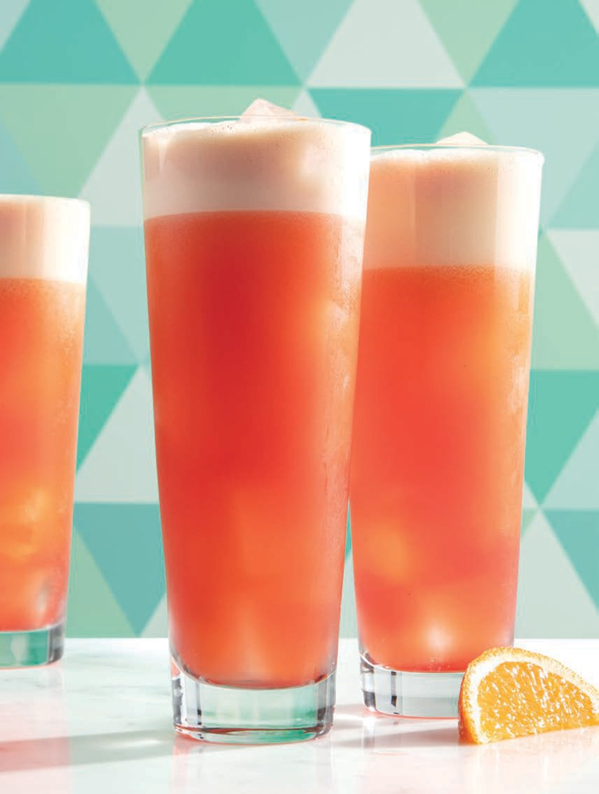

Garibaldi Recipe
Ingredients & Proportions
- Campari: 1.5 oz (or 45 ml)
-
Orange Juice: 4 oz (or 120 ml), preferably freshly squeezed from
high-pulp oranges (like Valencia)
- Ice: Plenty of fresh cubes
- Garnish: Orange wedge or half-wheel
Step-by-Step Instructions
-
Prep the Juice: Pour your fresh orange juice into a blender or use a
handheld milk frother. Blend or froth on high for 10-15 seconds until
the juice becomes light, airy, and frothy.
-
Build the Drink: Fill a tall highball or rocks glass with ice cubes.
- Pour: Pour the 1.5 oz of Campari directly over the ice.
-
Top and Stir: Top with the frothed orange juice and gently stir to
integrate the ingredients without completely flattening the foam.
-
Garnish: Top the rim of the glass with your orange wedge or half-wheel.

Back to home